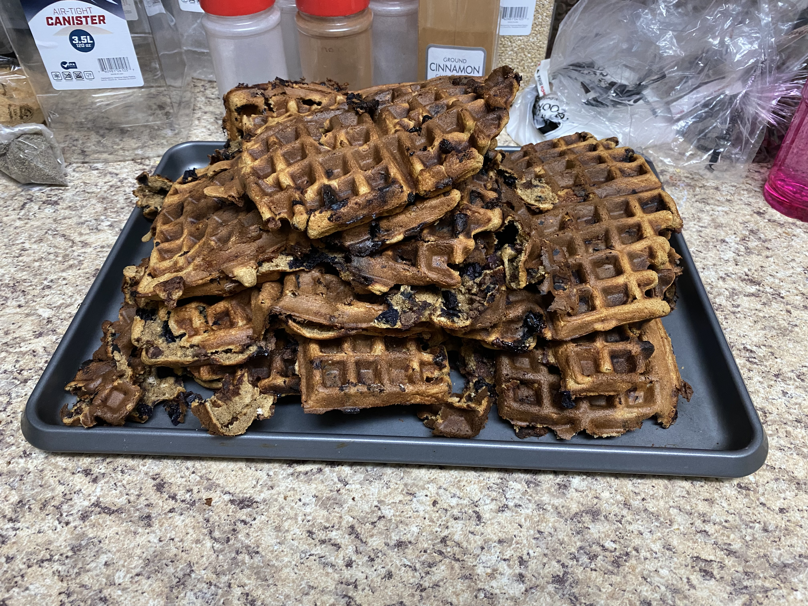
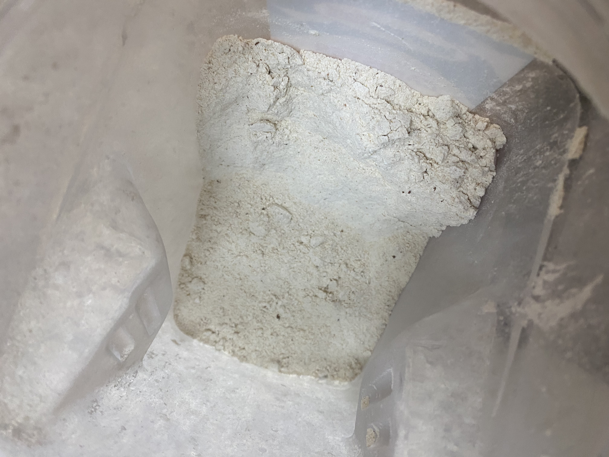
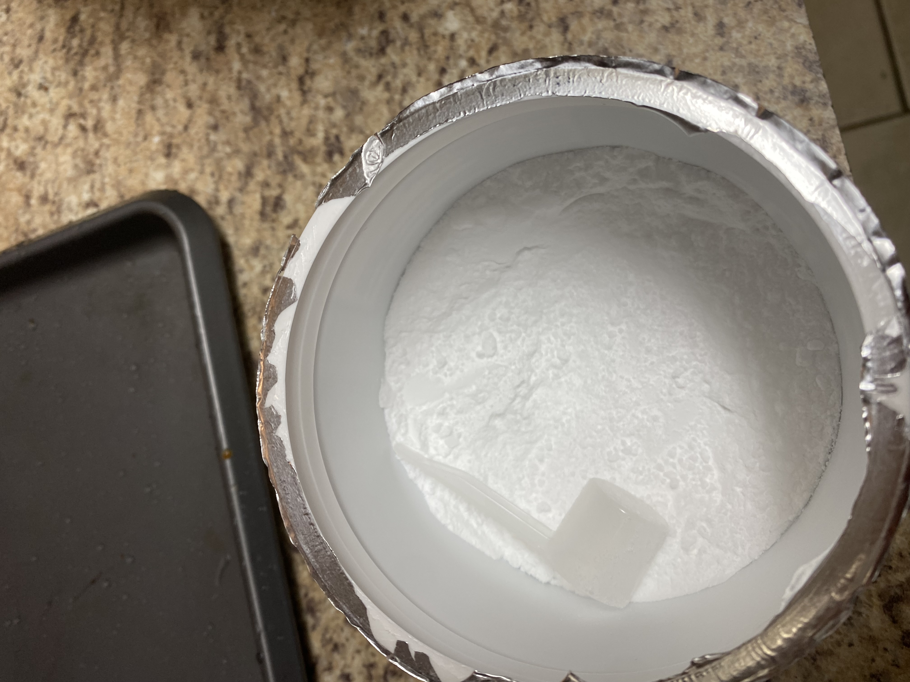
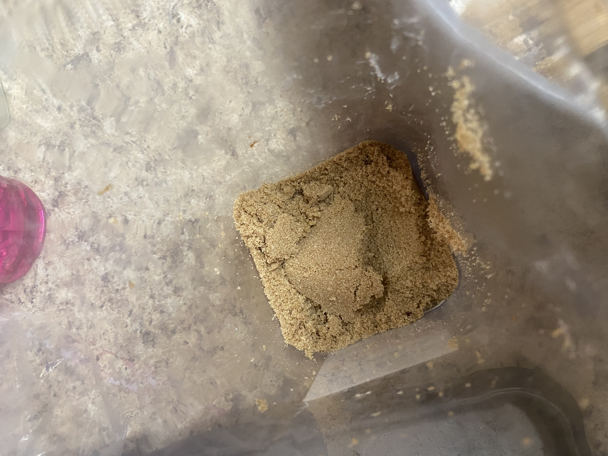
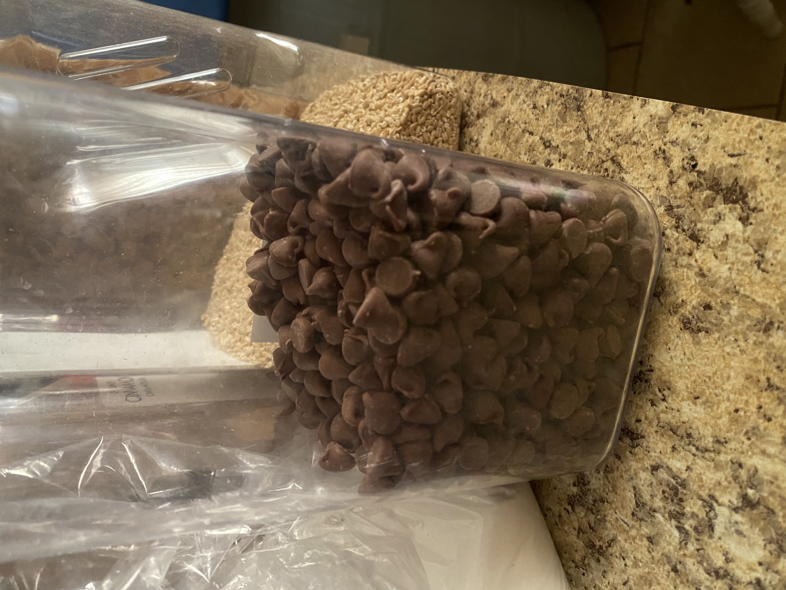
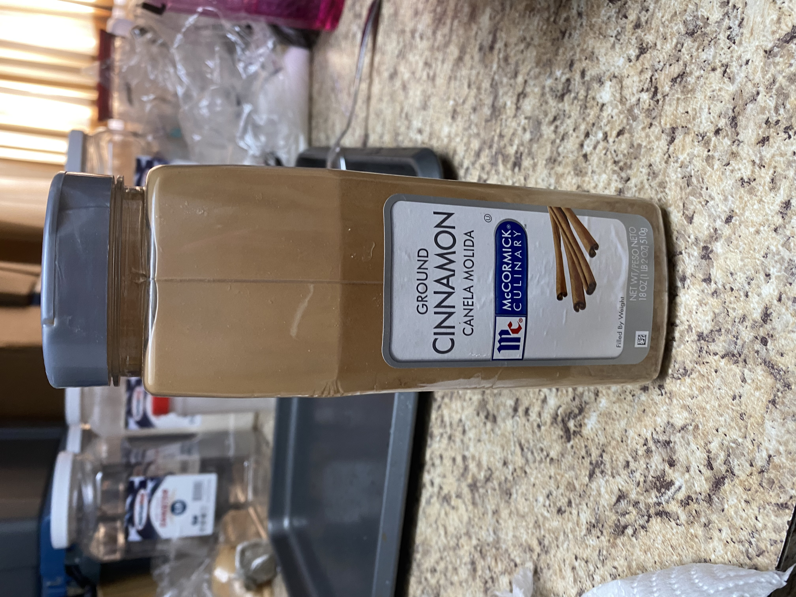
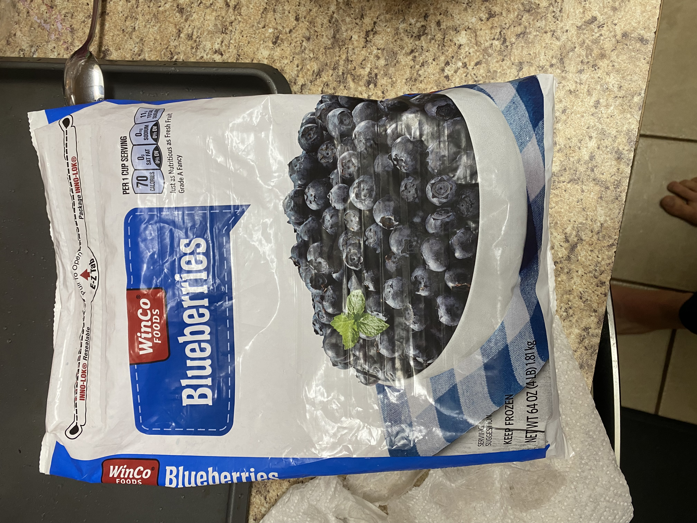
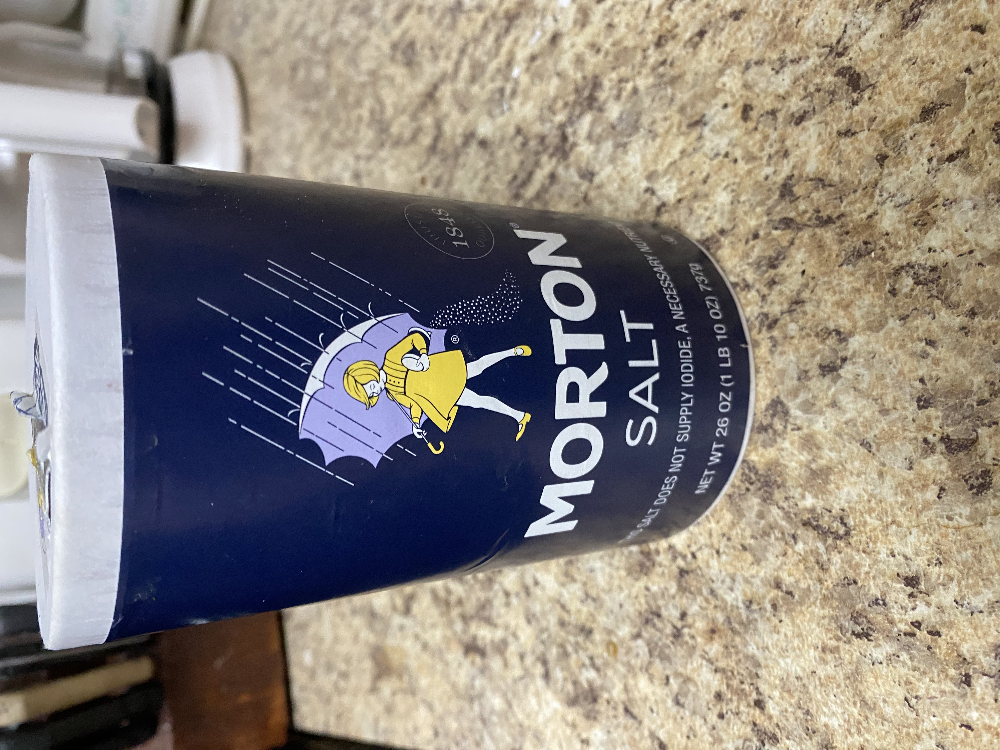
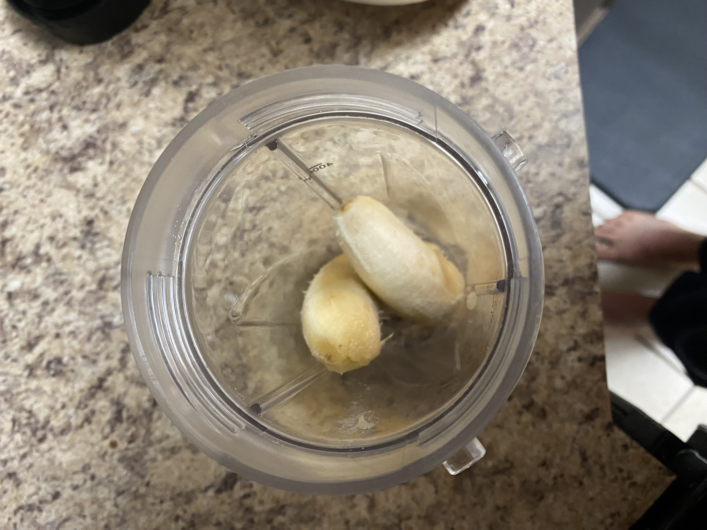

Protein Waffles

Description
This recipe is affordable, delicious and healthy. Cheaper than Kodiak cakes and tastier as well.
They last a while and I don't even refidgerate mine. Meal prep this and enjoy being able to eat quickly throughout the week.
A great snack whenever as well.
Ingredients
- Packcake Mix
- Whey Protein
- Creatine
- Frozen Blueberries
- Canned Pumpkin
- Brown Sugar
- Chocolate Chips
- Salt
- Milk/Water
- Bananas









Steps
- Make money to buy your own food or grow and raise all your food. I'll will not dive into these steps.
- Go and purchase your food from the grocery store.
- Bring it home.
- Cook your food.
- Give thanks to God for your food.
- Then eat your food.
- Enjoy your life, you now shouldn't be hungry for a few hours.
- Sometime later you'll poop your food.
- Repeate these steps all the days of your life on this Earth in your mortal frame.
Detailed Cooking Steps
*please note you should stir the mix as often as possible in these steps to avoid
pockets of unstired mix.*
- In a large bowl add two large scoops of protein powder and creatine.
I use the scooping devices the protein and creatine come with.
- Add a bunch of Protein Pancake Mix.
- Then add the canned pumpkin, chocolate chips, brown sugar, salt, and frozen blueberries.
- In a blender add 2-3 bananas with milk and blend. Add contents to bowl.
- Lastly add milk or water to the mix and stir.
The consistency is up to you, if you want denser waffles add less liquid,
if you want fluffier airier waffles add more liquid.
- Heat up a waffle iron/griddle/maker and scoop 1 cup of batter onto the cooking
element. Let cook for 8min.
- Place cooked waffles on large baking tray once finished.
Move the waffle to the side when the next one is ready to be layed down.
Make sure to use a paper towel to wipe off the condensation each time,
this ensures the waffles don't get soggy and remain crispy.
- Enjoy!